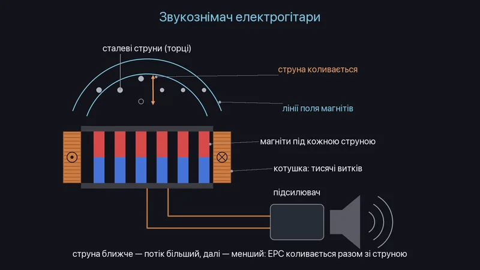
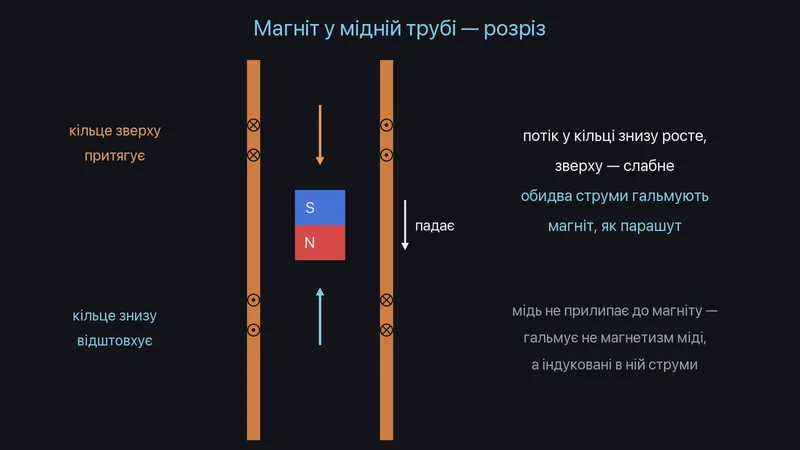
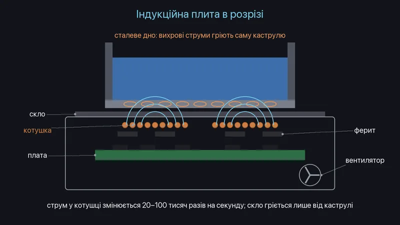

Закон Фарадея і правило Ленца: електромагнітна індукція простими словами
Магнітне поле саме по собі струму не дає — дає лише його зміна. Розбираємо досліди Фарадея, формулу ЕРС індукції, правило Ленца крок за кроком і три задачі з університетського задачника.
Зміст
Що таке електромагнітна індукція
У 1820 році Ерстед показав, що струм створює магнітне поле. Фізики одразу спитали навпаки: а чи може магнітне поле створити струм? Понад десять років відповідь була «ні»: дріт, покладений поруч із дротом під постійним струмом, мовчав.
Лише в 1831 році Майкл Фарадей помітив, що струм у сусідньому колі з'являється на мить — коли ключ замикають або розмикають. І ще — коли до котушки підносять магніт або відсувають його.

Найважливіше в цьому досліді — середнє положення: магніт усередині котушки, поле крізь витки сильне, а струму немає. Струм тече лише тоді, коли поле крізь котушку змінюється.
Електромагнітна індукція — це виникнення електрорушійної сили (ЕРС) у замкненому контурі, коли змінюється магнітний потік крізь цей контур. Струм, що при цьому тече, називають індукційним.
Магнітний потік: що саме має змінитися
Магнітний потік Φ показує, скільки ліній поля проходить крізь контур:
Тут B — магнітна індукція (тесла, Тл), S — площа контуру (м²), α — кут між лініями поля і нормаллю до контуру, тобто перпендикуляром до його площини. Одиниця потоку — вебер: 1 Вб = 1 Тл · 1 м².
З формули видно три способи змінити потік, і кожен дає індукцію:
- змінити саме поле B — посунути магніт, увімкнути чи вимкнути струм у сусідній котушці;
- змінити площу S — розтягнути контур або посунути провідник уздовж рейок;
- змінити кут α — повернути рамку. Так працює генератор змінного струму.
Закон Фарадея: формула ЕРС індукції
Фарадей з'ясував, від чого залежить ЕРС індукції: не від того, яке поле, а від того, як швидко змінюється потік.
У котушці потік змінюється в кожному витку, а витки з'єднані послідовно, тож їхні ЕРС додаються — звідси множник N. Мінус означає напрям: індукційний струм протидіє зміні потоку. Про нього — у розділі про правило Ленца. Коли рахують лише величину ЕРС, мінус не пишуть.
Приклад. Котушка має 200 витків. Магніт підносять так, що потік крізь кожен виток зростає від нуля до 0,01 Вб за 0,05 с.
Піднеси магніт удвічі швидше, за 0,025 с, — і ЕРС подвоїться: 200 · 0,01 / 0,025 = 80 В. Магніт той самий, а напруга інша: вирішує швидкість зміни.
Де це працює: звукознімач електрогітари

Сталева струна в полі магніту сама намагнічується. Коли вона коливається, то наближається до котушки й віддаляється, і потік крізь котушку змінюється в такт струні. У котушці виникає змінна ЕРС тієї самої частоти, а підсилювач робить із неї звук. Нейлонова струна не намагнічується, тож такий звукознімач її просто не чує.
▶ Фізика 22 — лекція «Електромагнітні явища»
Правило Ленца: як визначити напрям індукційного струму
Правило Ленца: індукційний струм має такий напрям, що його власне магнітне поле протидіє зміні магнітного потоку, яка цей струм викликала.
Саме це і записано мінусом у законі Фарадея. Ключове слово — «зміні». Індукційний струм бореться не з полем, а з тим, що поле змінюється.
- Потік росте — поле індукційного струму напрямлене проти зовнішнього поля.
- Потік слабне — поле індукційного струму напрямлене так само, як зовнішнє: воно намагається його підтримати.
Алгоритм у чотири кроки
- Визнач, куди напрямлене зовнішнє поле B крізь контур.
- З'ясуй, потік крізь контур росте чи слабне.
- Напрям поля індукційного струму: росте — проти B, слабне — уздовж B.
- За правилом свердлика (правої руки) переведи напрям цього поля в напрям струму: якщо поле всередині витка напрямлене до тебе, струм тече проти годинникової стрілки, якщо від тебе — за годинниковою.
Приклад. Поле напрямлене від нас крізь виток і рівномірно слабшає. Потік слабне — отже, індукційний струм підтримує поле: його поле теж напрямлене від нас. Свердлик дає струм за годинниковою стрілкою. Зверни увагу: струм тут не «проти поля», а разом із ним — бо протидіє він зміні.
Магніт у мідній трубі
Кинь сильний магніт у вертикальну мідну трубу. Мідь не магнітна, магніт до неї не прилипає — а падає він повільно, наче в густому меду.

Уяви трубу як стос мідних кілець. Кільце під магнітом: магніт наближається, потік крізь кільце росте, і струм тече так, щоб відштовхнути магніт. Кільце над магнітом: магніт віддаляється, потік слабне, і струм тече у зворотний бік — щоб притягнути магніт назад. Обидва струми гальмують падіння, як парашут.
На тому самому принципі працюють потяги на магнітній подушці: під час руху в металевому полотні під вагоном течуть індукційні струми, і їхнє поле відштовхує магніти вагона. На швидкості потяг піднімається на 10–15 см і розганяється понад 500 км/год.
▶ Фізика 22 — лекція «Електромагнітні явища» — з 3:04: Правило Ленца і вихрові струми
Вихрове електричне поле і струми Фуко
Максвелл дав глибше пояснення: змінне магнітне поле породжує електричне поле скрізь, навіть там, де провідника немає. Це поле вихрове: його лінії замкнені. Провідник лише показує, що поле є, — у ньому починає текти струм.
У масивному шматку металу це поле закручує струми по замкнених контурах. Це вихрові струми, або струми Фуко. У них три корисні й один шкідливий наслідок:
| Ефект | Де трапляється |
|---|---|
| гальмування | заспокоєння стрілок приладів, гальма потягів, магніт у трубі |
| нагрівання — шкода | осердя трансформаторів і двигунів набирають із тонких ізольованих пластин, щоб вихрові струми слабшали |
| нагрівання — користь | індукційні печі й плити |
| скін-ефект | струм високої частоти тече біля поверхні — на цьому засноване поверхневе гартування сталі |

Індукційна плита. Під склокерамікою лежить плоска мідна котушка, під нею — пластини фериту, що спрямовують поле вгору, а ще нижче — плата, яка перетворює струм мережі на струм частотою в десятки тисяч герц. Змінне поле проходить крізь скло й наводить вихрові струми в сталевому дні каструлі — гріється саме дно. Тому алюмінієва чи скляна каструля на звичайній індукційній плиті не гріється: потрібне дно з магнітної сталі.
Шукач арматури й проводки працює так само: змінне поле котушки наводить вихрові струми в сталевому стрижні в бетоні, їхнє поле повертається до приладу, і він пищить.
Розв'язуємо задачі
Три задачі з університетського задачника. У кожній — окремий крок на кожну дію.
Задача 1. Середня ЕРС, коли поле вимикають
Виток площею S = 50 см² стоїть у полі B = 0,1 Тл; нормаль до витка утворює з полем кут α = 60°. Поле вимикають за Δt = 0,02 с. Знайти середню ЕРС індукції.
- Переводимо площу: 50 см² = 50 · 10⁻⁴ м² = 5 · 10⁻³ м².
- Початковий потік: Φ₀ = B · S · cos α = 0,1 · 5 · 10⁻³ · 0,5 = 2,5 · 10⁻⁴ Вб (cos 60° = 0,5).
- Поле вимкнули — потік став нулем, отже ΔΦ = 2,5 · 10⁻⁴ Вб.
- ε = ΔΦ / Δt = 2,5 · 10⁻⁴ / 0,02 = 1,25 · 10⁻² В.
Відповідь: ε = 12,5 мВ.
Задача 2. Індукція з напруги на кінцях провідника
Провідник завдовжки l = 1 м рухається зі швидкістю v = 4 м/с поперек ліній поля. Напруга на його кінцях U = 100 мВ. Знайти індукцію поля.
- За час Δt провідник зміщується на v · Δt і «замітає» смужку площею ΔS = l · v · Δt.
- Потік крізь цю смужку: ΔΦ = B · ΔS = B · l · v · Δt.
- За законом Фарадея ε = ΔΦ / Δt = B · l · v — це ЕРС рухомого провідника, її варто запам'ятати.
- Коло не замкнене, струму немає — тож напруга на кінцях дорівнює ЕРС: U = ε.
- B = U / (l · v) = 0,1 / (1 · 4) = 0,025 Тл.
Відповідь: B = 25 мТл.
Задача 3. Поле змінило напрям: чому 2 · B · S
Рамка площею S = 5 см² з'єднана з гальванометром опором R = 10 кОм. Поле B = 10 мТл напрямлене поперек рамки; його змінюють на протилежне. Який заряд пройде крізь гальванометр?
- Спершу виводимо формулу заряду: q = I · Δt, I = ε / R, ε = ΔΦ / Δt. Підставляємо: q = ΔΦ / (R · Δt) · Δt = ΔΦ / R. Час скоротився — заряд не залежить від того, швидко чи повільно змінюють поле.
- Було: Φ₁ = B · S · cos 0° = +B · S. Стало: Φ₂ = B · S · cos 180° = −B · S.
- Зміна потоку: ΔΦ = Φ₁ − Φ₂ = 2 · B · S — не B · S, як хочеться написати з першого погляду.
- q = 2 · B · S / R = 2 · 10⁻² · 5 · 10⁻⁴ / 10⁴ = 10⁻⁹ Кл.
Відповідь: q = 1 нКл. З ΔΦ = B · S вийшло б удвічі менше — це найчастіша помилка в цій задачі.
▶ Фізика 22, практикум — 12 задач з розв'язанням — з 1:04: Задача 1 і далі — усі 12 задач із розв'язанням
Типові помилки
- Кут береться з нормаллю, а не з площиною контуру. Якщо в умові «площина рамки під кутом 30° до поля», то α = 60°.
- Сантиметри квадратні. 1 см² = 10⁻⁴ м², а не 10⁻² м².
- Поле змінило напрям — зміна потоку 2 · B · S. Потік пройшов від +B · S через нуль до −B · S.
- Ленц — проти зміни, а не проти поля. Коли потік слабне, індукційний струм поле підтримує.
- Струм у колі тече лише тоді, коли потік змінюється. Магніт, що нерухомо лежить у котушці, струму не дає, хоч яке сильне його поле.
Коротко
- Електромагнітна індукція — ЕРС у контурі, коли змінюється магнітний потік Φ = B · S · cos α.
- Закон Фарадея: ε = −N · ΔΦ / Δt. Важить швидкість зміни потоку.
- Правило Ленца: індукційний струм протидіє зміні потоку — звідси мінус у формулі, гальмування магніту в трубі й струми Фуко.
- Рухомий провідник: ε = B · l · v. Заряд, що пройшов контуром: q = ΔΦ / R — не залежить від швидкості.
Далі за темою: трансформатор — взаємоіндукція в залізі і рівняння Максвелла — індукція без провідника.